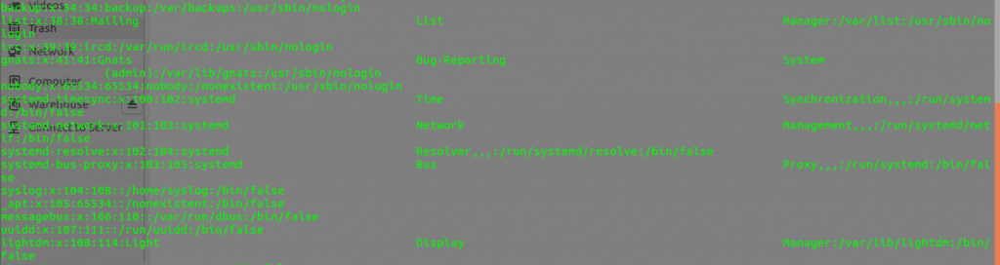

10 приёмов работы в терминале Linux, о которых мало кто знает
Близкое знакомство с возможностями терминала — один из признаков человека, который хорошо разбирается в Linux. Хотя некоторые вещи запомнить сложно, есть довольно-таки простые, но эффективные приёмы, которые способны повысить качество и скорость работы в терминале. Пожалуй, каждый пользователь Linux рано или поздно обзаводится собственным списком ценных мелочей. Надеемся, некоторых из тех десяти приёмов работы в командной строке Linux, которыми мы хотим с вами поделиться, попадут в ваш личный список полезных команд.
№1. Переход в предыдущую директорию
Все мы используем команду cd .. для перехода в родительскую директорию. А для перехода к предыдущей директории можно использовать команду cd -. Этот приём похож на кнопку «Назад».
test@linoxide:~/Downloads$ cd -
/home/eyramm
test@linoxide:~$ cd -
/home/eyramm/Downloads
test@linoxide:~/Downloads$
Тут мы сначала находились в директории Downloads, затем переместились в директорию Home, и, наконец, снова вернулись в директорию Downloads.
№2. Повтор последней команды
Для того, чтобы повторить предыдущую команду, просто введите !!. В этом примере мы повторим предыдущую команду с правами суперпользователя.
$ apt install vlc
E: Could not open lock file /var/lib/dpkg/lock - open (13: Permission denied)
E: Unable to lock the administration directory (/var/lib/dpkg/), are you root?
$ sudo !!
sudo apt install vlc
vlc is already the newest version (2.2.2-5ubuntu0.16.04.3).
Этот приём весьма полезен именно в ситуациях, подобных рассмотренной, когда команду, введённую ранее, надо выполнить с правами суперпользователя.
№3. Многократное выполнение команды до её успешного завершения
Для того, чтобы выполнять команду до тех пор, пока она не будет успешно завершена, используйте код возврата команды в такой конструкции:
while ! [command]; do sleep 1; done
Например:
$ while ! ./run.sh; do sleep 1; done
cat: run.sh: No such file or directory
cat: run.sh: No such file or directory
linoxide.com
Команда в этом примере будет повторяться до тех пор, пока не будет найден файл run.sh и его содержимое не будет выведено на экран.
№4. Просмотр сведений о ходе передачи файла
Для того, чтобы наблюдать за ходом передачи файла, воспользуйтесь командой pv:
$ pv access.log | gzip > access.log.gz
611MB 0:00:11 [58.3MB/s] [=> ] 15% ETA 0:00:59
№5. Планирование заданий
Планировать задания в Linux можно с помощью команды at:
echo wget https://sample.site/test.mp4 | at 2:00 PM
Для того, чтобы посмотреть ожидающие выполнения задания, воспользуйтесь командой atq.
№6. Вывод данных в виде таблицы
Вызвав команду ls, или что-нибудь ещё, выводящее данные на экран, можно столкнуться с длинными списками, для просмотра которых требуется продолжительный скроллинг. То, что выводится на экран, легко можно организовать в виде таблицы с помощью команды column -t. Например:
$ cat /etc/passwd | column -t
Вот как выглядит то, что у нас получилось.

Вывод команды, организованный в виде таблицы
№7. Полезные комбинации клавиш
Команда clear очищает экран терминала. Комбинация клавиш Ctrl + L позволяет добиться того же самого быстрее.
Комбинация клавиш Alt + . позволяет перемещаться по ранее введённым командам. Комбинация клавиш Ctrl + U убирает из строки всё то, что уже в неё введено. Например, можете это попробовать для очистки введённого в командной строке пароля.
Для инкрементального обратного поиска по истории команд используйте комбинацию клавиш Ctrl + R.
№8. Сжатие, разбиение и шифрование файлов
Передача больших файлов между компьютерами — задача непростая. Упростить её можно, сжав файлы с помощью команды zip, или, если файлы ну просто очень большие, создав многотомный архив. Если при этом файлы нужно ещё и зашифровать — воспользуйтесь ключом -e.
$ zip -re test.zip AdbeRdr11010_en_US.exe run.sh Smart_Switch_pc_setup.exe
Enter password:
Verify password:
adding: AdbeRdr11010_en_US.exe (deflated 0%)
adding: run.sh (stored 0%)
adding: Smart_Switch_pc_setup.exe (deflated 2%)
№9. Стресс-тест батареи ноутбука
Хотите узнать, как долго батарея вашего ноутбука продержится при полной нагрузке на процессор? Попробуйте следующую команду:
$ cat /dev/urandom > /dev/null
№10. Переименование или перемещение файлов
Если вам нужно быстро переименовать или переместить множество файлов с суффиксами — попробуйте команду следующего вида:
$ cp /home/sample.txt{,-old}
Вот как её можно расшифровать:
$ cp /home/sample.txt /home/sample.txt-old
Ниже приведён пример переименования файлов с определённым расширением в пакетном режиме:
$ ls
text_comes_here_1.txt
text_comes_here_2.txt
text_comes_here_3.txt
text_comes_here_4.txt
$ rename 's/comes_here/goes_there/' *.txt
$ ls
text_goes_there_1.txt
text_goes_there_2.txt
text_goes_there_3.txt
Итоги
Мы рассказали о нескольких приёмах взаимодействия с командной строкой Linux. Надеемся, вы нашли здесь то, что поможет вам упростить и ускорить повседневную работу.
Уважаемые читатели! Что вы добавили бы к нашему списку неочевидных полезностей командной строки Linux?